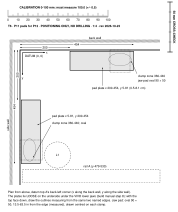

T6Clamp pad plate (P11) placement · reference VERIFIEDASSUMPTION / FIELD CHECK
Template T6 · rev 2026-10-23
units: mm; tape stations also in cm
numbers: manual/facts.json + data.json, source_commit: HEAD of https://github.com/scotthowson/desk-setup on 23 Oct 2026 (supersedes a2e99ea with measured facts)
!PRINT AT 100% / ACTUAL SIZE
DISABLE FIT TO PAGE / shrink to fit / scale to fit. Measure the ruler before use: 0 to 100 must read 100.0 mm and the cross-check bar 50.0 mm (±0.5). If either is off, do not use the sheet: reprint.

VERIFIED: pad plate outlines and the 90 × 50 lower-jaw pad, measured 21-23 Oct 2026 (facts.json vivo). ASSUMPTION / FIELD CHECK: the oval drawn centred on the clamp; the clamp back sets the final position (crossbar fitted as the spacing guide).